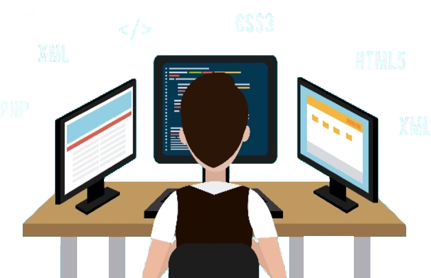
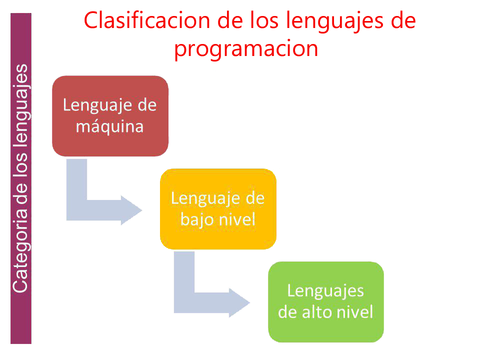

La clasificación de los Lenguajes Informáticos
Este concepto no tiene nada que ver con que un lenguaje sea superior o mejor que otro,
sino por el nivel de las capas donde trabaja cada uno.
Antes de profundizar en tipos concretos debemos establecer la clasificación de los lenguajes
de programación según los dos baremos que existen a día de hoy. Por eso te voy a contar como
se clasifican los lenguajes de programación.

Ejemplos de cada tipo
Actualmente, se contemplan la siguiente clasificación de lenguajes de programación:
Lenguaje de bajo nivel
En este caso, los lenguajes de bajo nivel están pensados para darle instrucciones de manera detallada al hardware. Se usan para crear controladores, drivers y sistemas operativos. En esta categoría están el binario, que en verdad es el tipo de código que entiende la computadora, el lenguaje máquina y el ensamblador.
Lenguaje de alto nivel
Los lenguajes de alto nivel trabajan al nivel del software y es más parecido al lenguaje humano. Cuando se programa en la capa del software ya no nos preocupamos por las instrucciones del hardware, hay un gran nivel de abstracción. En esta categoría están todos los lenguajes que ya conoces: PHP, JavaScript, entre otros.
